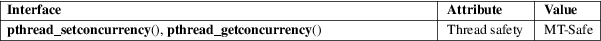

pthread_setconcurrency, pthread_getconcurrency − set/get the concurrency level
POSIX threads library (libpthread, −lpthread)
#include <pthread.h>
int
pthread_setconcurrency(int new_level);
int pthread_getconcurrency(void);
The pthread_setconcurrency() function informs the implementation of the application’s desired concurrency level, specified in new_level. The implementation takes this only as a hint: POSIX.1 does not specify the level of concurrency that should be provided as a result of calling pthread_setconcurrency().
Specifying new_level as 0 instructs the implementation to manage the concurrency level as it deems appropriate.
pthread_getconcurrency() returns the current value of the concurrency level for this process.
On success, pthread_setconcurrency() returns 0; on error, it returns a nonzero error number.
pthread_getconcurrency() always succeeds, returning the concurrency level set by a previous call to pthread_setconcurrency(), or 0, if pthread_setconcurrency() has not previously been called.
pthread_setconcurrency() can fail with the following error:
|
EINVAL |
new_level is negative. |
POSIX.1 also documents an EAGAIN error ("the value specified by new_level would cause a system resource to be exceeded").
For an explanation of the terms used in this section, see attributes(7).

POSIX.1-2008.
glibc 2.1. POSIX.1-2001.
The default concurrency level is 0.
Concurrency levels are meaningful only for M:N threading implementations, where at any moment a subset of a process’s set of user-level threads may be bound to a smaller number of kernel-scheduling entities. Setting the concurrency level allows the application to give the system a hint as to the number of kernel-scheduling entities that should be provided for efficient execution of the application.
Both LinuxThreads and NPTL are 1:1 threading implementations, so setting the concurrency level has no meaning. In other words, on Linux these functions merely exist for compatibility with other systems, and they have no effect on the execution of a program.
pthread_attr_setscope(3), pthreads(7)